Team
Principal investigator
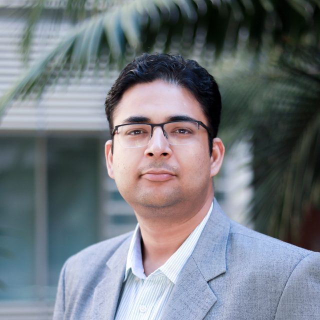
Samanvaya Srivastava
B.S. and M.S., Chemical Engineering, Indian Institute of Technology (IIT) Kanpur
Ph.D., Chemical Engineering, Cornell University
Postdoc, Pritzker School of Molecular Engineering, University of Chicago
Samanvaya is an Associate Professor of Chemical and Biomolecular Engineering at UCLA. He completed his undergraduate and master’s work at IIT Kanpur and his Ph.D. with Lynden Archer at Cornell University, all in Chemical Engineering. Before coming to UCLA he was a postdoctoral scholar with Matthew Tirrell at the Pritzker School of Molecular Engineering, University of Chicago.
His research interests are in understanding the influence of intermolecular interactions on material structure and properties, with a broader aim of combining that understanding with molecular engineering and self-assembly to improve materials design. He has received the Austin Hooey Graduate Research Excellence Recognition Award at Cornell (2013), the RSC Researcher Mobility Grant (2017), AIChE 35 Under 35 (2020), the NSF CAREER award (2020), and the Scialog Fellowship (2024).
Department profile · CV · Google Scholar · ORCID
samsri@ucla.edu
Postdoctoral researchers
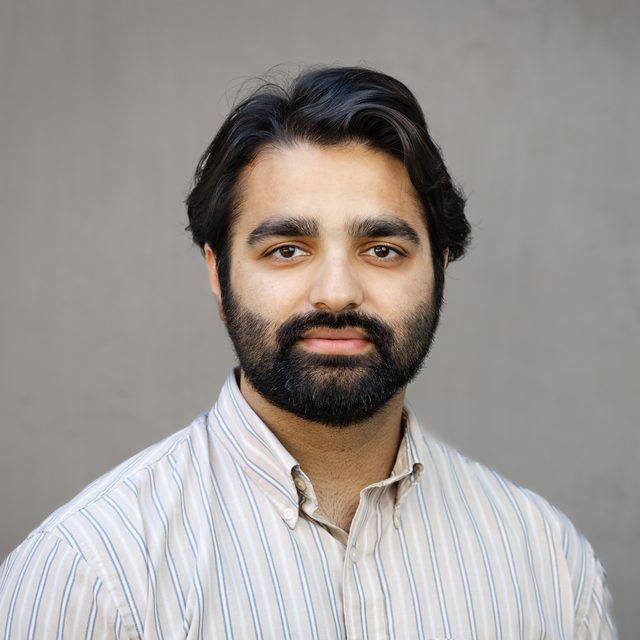
Aoon Rizvi
B.S., Chemistry, University of Illinois at Urbana-Champaign
Ph.D., Chemistry, UC Irvine
Aoon did his Ph.D. with Joe Patterson on the fundamentals of block copolymer coacervation, reactivity, and nanoscale structure, then joined Serena Sanulli’s lab at Stanford as a Propel Postdoctoral Scholar, studying the effects of DNA methylation on chromatin condensates and developing cryo-ET approaches for condensate morphology. He now develops coacervate-based bioreactors for enzymatic cascades using high-throughput approaches. Beyond science, Aoon cooks, explores the outdoors, and shoots film photography.
aoonr@g.ucla.edu
Graduate students
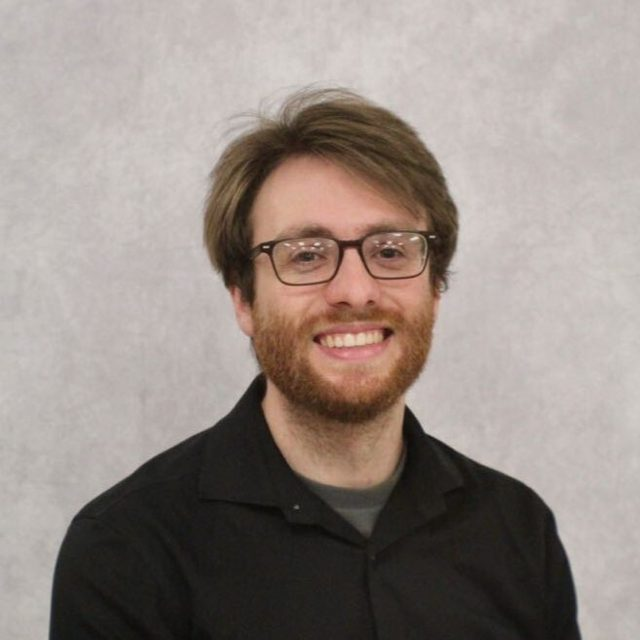
Arthur Odenheimer
B.S., Chemistry, Louisiana State University
B.M., Flute Performance, Louisiana State University
Arthur is a graduate student in Chemistry, working in both the Srivastava Group and the Caram Lab. His research uses spectroscopic methods to understand the self-assembly and properties of polymers. In his free time he plays the flute, plays video games, and enjoys being outside.
aodenh3@g.ucla.edu
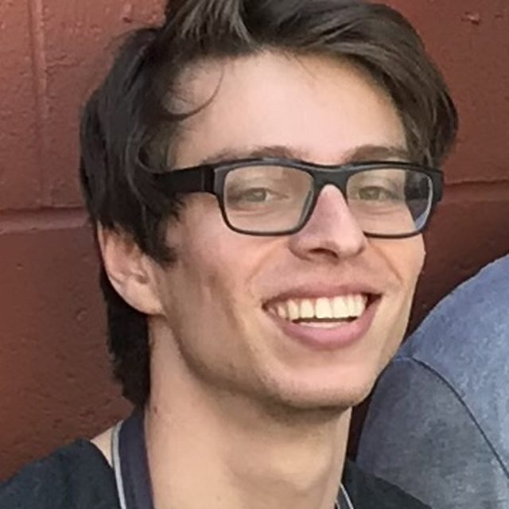
Charlie Drucker
B.S., Chemical Engineering, Massachusetts Institute of Technology
Charlie is a graduate student in Chemical and Biomolecular Engineering, working with both the Srivastava and Peterson groups on the rheology of dense emulsions. A former line cook, Charlie spends most of his free time in the kitchen.
c.drucker@ucla.edu
Vihar Trada
B.S., Chemical Engineering, University of Illinois at Chicago
Vihar is a graduate student in Chemical and Biomolecular Engineering. In his undergraduate studies he assembled an apparatus to characterize extensional flow properties of complex fluids such as hand soaps. He enjoys hiking and roller coasters, and listens to classical music and plays chess.
vtrada@g.ucla.edu
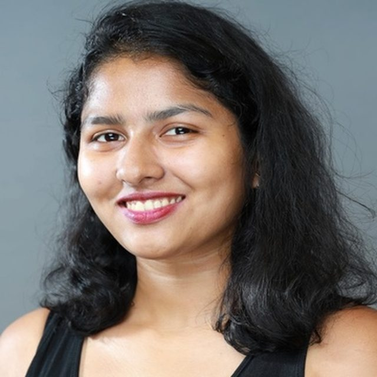
Riddhi Kaley
B.Tech., Oils Technology, Institute of Chemical Technology, Mumbai
Riddhi is a graduate student in Chemistry and Biochemistry. In her undergraduate studies she worked on the synthesis of eco-friendly plasticizers. Outside the lab she likes reading, watching sitcoms, hiking, and traveling.
kaleyriddhi@g.ucla.edu
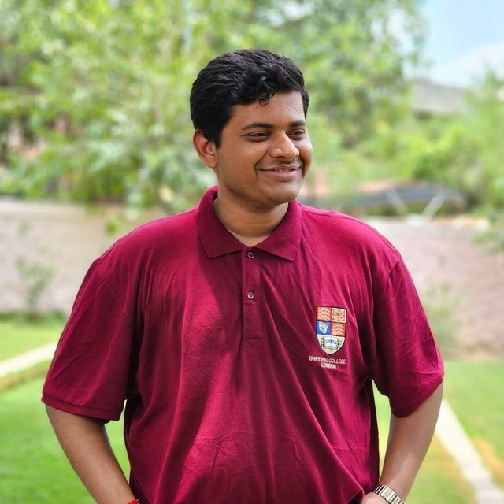
Devajyoti Bedahuti Banerjee
B.S., Chemical Engineering, University Institute of Chemical Technology, Jalgaon
Deva is a graduate student in Chemical and Biomolecular Engineering, working on hydrogels. In his undergraduate work he studied the rheology of shear-induced particle–polymer gel formation, known as shake-gels. Beyond the lab, Deva’s love for cricket runs deep, and he never misses good music.
devajyotib@g.ucla.edu
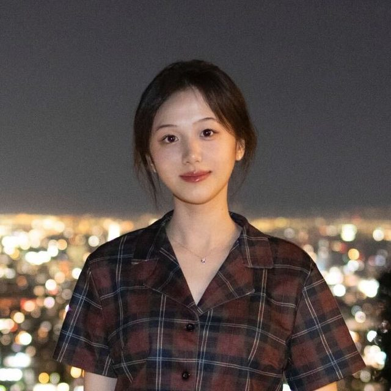
Tianyue Yu
B.S., Chemical and Biomolecular Engineering, UCLA
Tianyue is a graduate student in Chemical and Biomolecular Engineering. As an undergraduate she characterized the adhesive properties of polyelectrolyte complex hydrogels; her graduate research explores new directions in water pretreatment. In her spare time she likes drawing, hiking, and fishing.
tianyueyu@ucla.edu
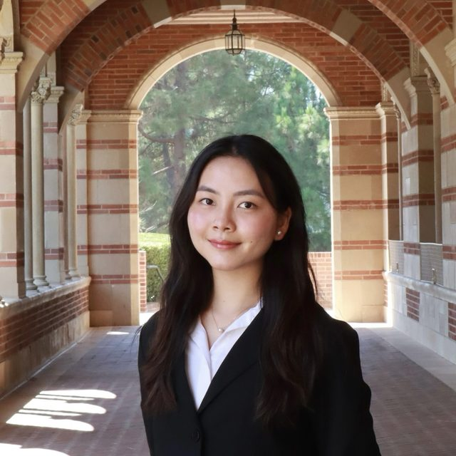
Orchid Pyone
B.S., Chemical Engineering, UCLA
Orchid is a graduate student in Chemical and Biomolecular Engineering, originally from Myanmar. She joined the lab in the summer of 2023 as an undergraduate. Outside of lab she enjoys badminton, traveling, and going to concerts.
orchidwang@ucla.edu
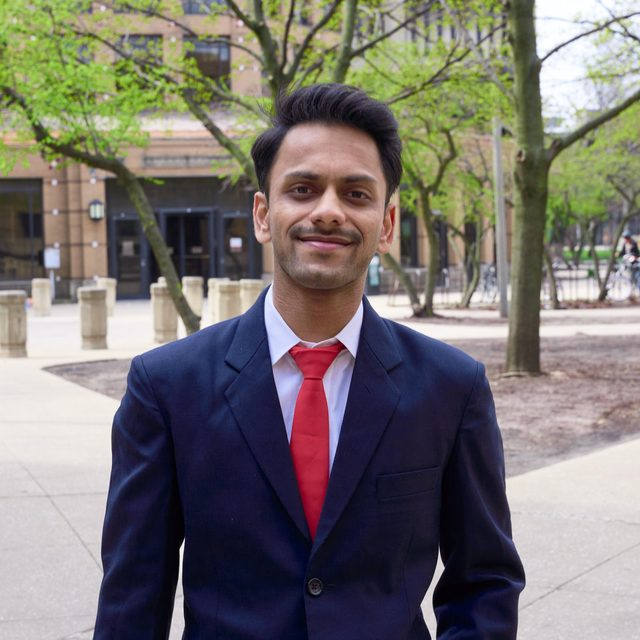
Varun Maheshwari
B.S., Chemical Engineering, University of Illinois at Chicago
Varun is a graduate student in Chemical and Biomolecular Engineering. In his undergraduate studies he characterized extensional flow properties of complex fluids such as creams and oils. He likes photography, cooking, pool, soccer, running, and hiking.
vmaheshwari11@ucla.edu
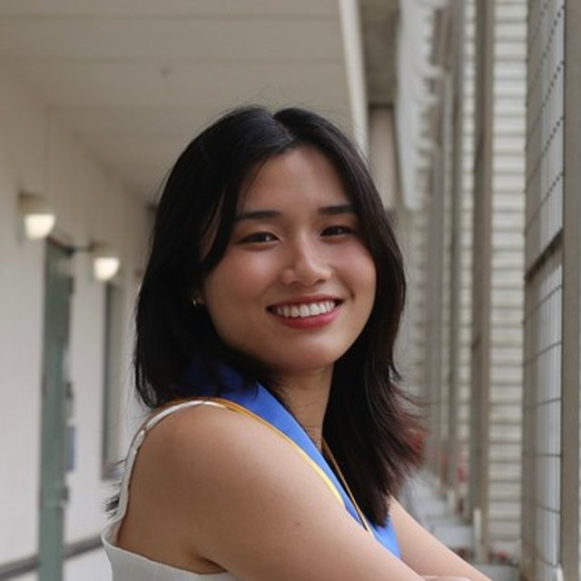
Hailey Tran
B.S., Chemical Engineering, UC San Diego
Hailey is a graduate student in Chemical and Biomolecular Engineering, co-advised by Prof. Srivastava and Prof. Wright. Her undergraduate research focused on engineered living materials — biosynthesis of conductive polymers and encapsulation of bacteria. In her free time she enjoys trying new recipes with friends and staying active at the gym.
haileytran@ucla.edu
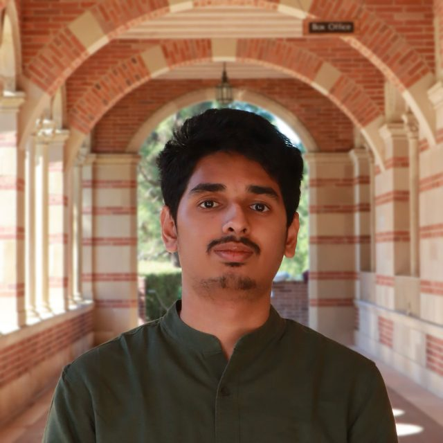
Tarun Shankar Subramaniam
B.Tech., Chemical Engineering, National Institute of Technology, Trichy
Tarun is a graduate student in Chemical and Biomolecular Engineering. During his undergraduate studies he worked on polymer nanocomposites and thin-film systems, focusing on phase-field modeling and material design. In his free time he enjoys tennis, movies, and traveling.
trnsync6@ucla.edu
Undergraduate students
Anuraag Tandon
Anuraag is majoring in Bioengineering on a premedical path. He is interested in the adhesive properties of polyelectrolyte complex coacervates. He enjoys spending time with friends and family, running, and playing tennis.
anutandon@ucla.edu
Sophia Gladkevich
Sophia is a Chemical Engineering undergraduate from the Bay Area. She joined the lab in 2024 and works on polyurethane foams. In her free time she enjoys puzzles, outdoor runs, and exploring Los Angeles with friends.
sgladkev@g.ucla.edu
Marlo Taylor
Marlo is a biochemistry major and conservation biology minor from Pleasant Hill, CA. She joined the lab in Spring 2024. In her free time she enjoys running, baking, going to concerts, and being outside.
marlot@g.ucla.edu
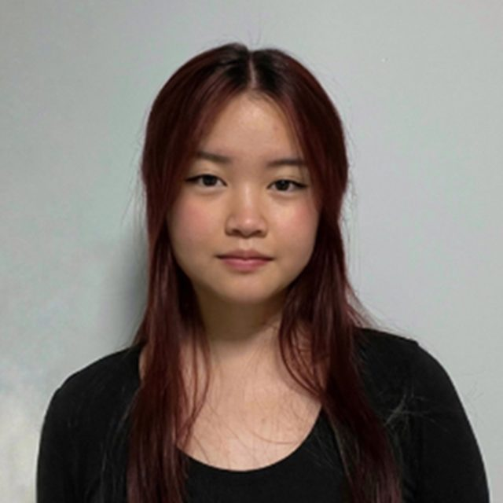
Helene Do
Helene is a Chemical Engineering undergraduate researching the mechanical properties of polyelectrolyte complex hydrogels. Outside the lab she enjoys spending time with family, friends, and her dog, Truffle.
heleneedo@ucla.edu
Henley Roy
Henley is a Biochemistry and Business Economics major from Chico, CA, studying the properties of polyelectrolyte complex micelles. Outside the lab she enjoys running, hiking, and playing the violin.
henleyroy@g.ucla.edu
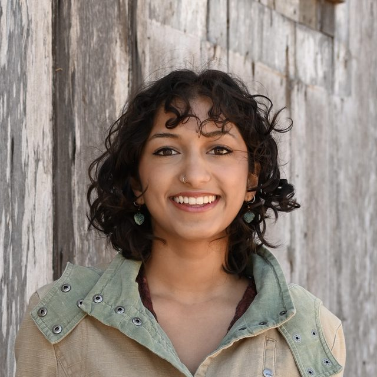
Swaraali Save
Swaraali is a Chemical Engineering undergraduate from the Bay Area. Outside of research she enjoys ceramic arts, baking, fashion, and travel.
svs26@g.ucla.edu
Bibi Richardson
Bibi is a Chemical Engineering undergraduate who joined the lab at the beginning of 2024 and is interested in wastewater treatment. Outside the lab she enjoys swimming, hiking, and reading.
bibirichardson@g.ucla.edu
Clarisse Angeles
Clarisse is a Chemical Engineering undergraduate from the Antelope Valley. Outside of lab she enjoys running, basketball, and going out to eat with friends.
cangeles24@g.ucla.edu
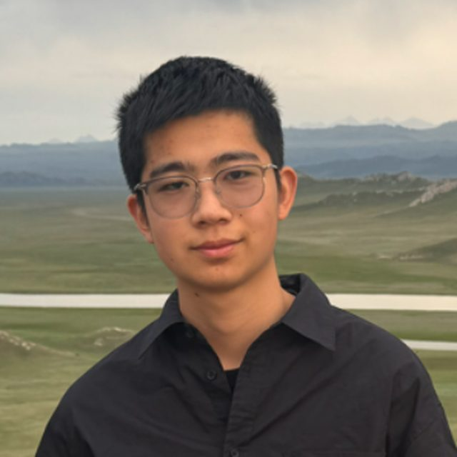
Esson Zhang
Esson is a Chemical Engineering undergraduate from Washington State who joined the lab in 2025. In his free time he plays soccer, ping pong, and video games, and hangs out with friends.
essonz@g.ucla.edu
Chase Dymon
Chase is a Chemical Engineering student from Barrington, IL, who joined the lab in 2026 to work on enzyme reactions in coacervate droplets. Outside the lab he goes to the gym, watches sports, and hangs out with friends.
chasedymon@g.ucla.edu
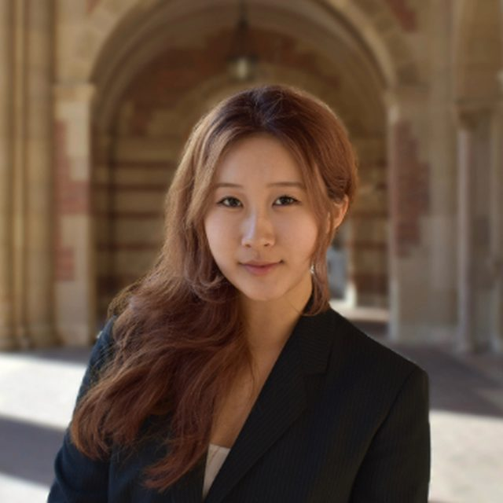
Hayley Yu
Hayley is an undergraduate in Chemical and Biomolecular Engineering who joined the lab in 2026 and is interested in polymer synthesis. In her free time she enjoys trying new food spots, travelling, and spending time with friends.
hayleyyu@g.ucla.edu
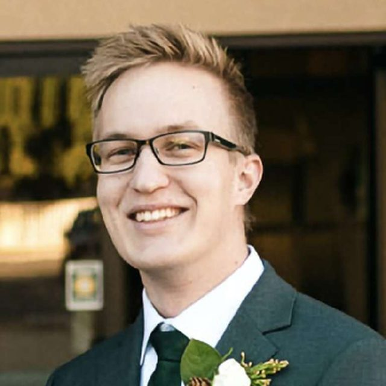
Joseph Anderson
Joseph is a Chemical Engineering student who joined the lab in 2026 to focus on process automation. In his free time he enjoys hiking near his hometown of Santa Clarita, rock climbing, biking, cooking, and playing games with friends.
joeanderson991@g.ucla.edu
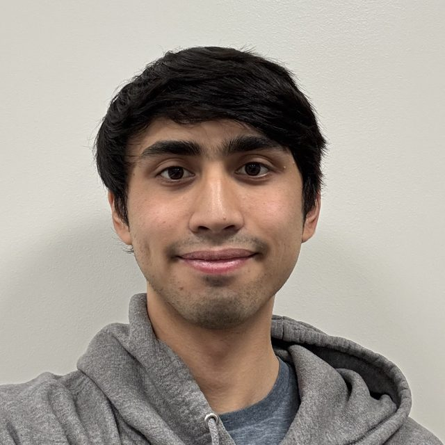
Alexander Landsberg
Alex is a fourth-year Chemical Engineering transfer student from the Bay Area, interested in contributing to research on coacervate droplets.
alexander23@g.ucla.edu
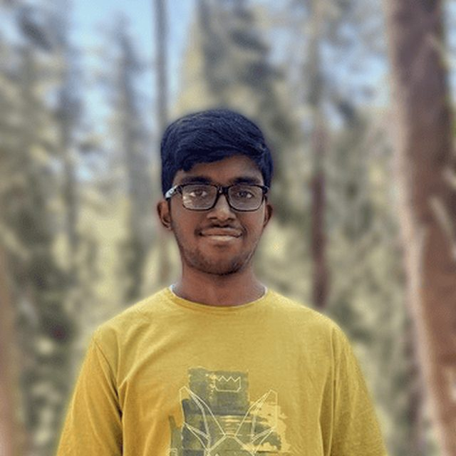
Anirudh Govada
Anirudh is a first-year student from Orange County studying Biochemistry on the pre-med track. He is interested in polymer synthesis, reaction chemistry, and biomedical applications. Outside of research he enjoys chess, traveling, and the outdoors.
anigovada08@g.ucla.edu
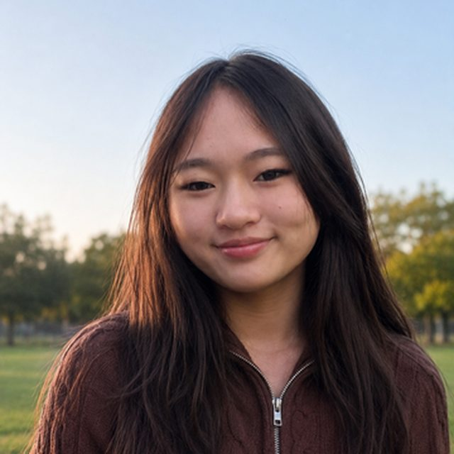
Kira Choi
Kira is a Chemical Engineering undergraduate from Torrance, interested in the properties of polyelectrolyte complex hydrogels. Outside the lab she enjoys baking, arts and crafts, and eating out with friends.
kirachoi@g.ucla.edu
Alumni
- Caitlyn Fick, Ph.D. 2026 — Assistant Teaching Professor, Santa Clara University.
- Fahed Albreiki, Ph.D. 2026 — Assistant Professor, UAE University.
- Jaicy Vallapurackal, Postdoctoral Scholar, 2026 — Senior Scientist, Biocatalysis Team, Merck, Rahway.
- Zhi Wan, Postdoctoral Scholar (co-advised with Gaurav Sant), 2024–2026.
- Manasa Perikala, Postdoctoral Scholar, 2025–2026.
- Yufei Wang, Postdoctoral Scholar, 2025–2026.
- Antonio Garcia, Postdoctoral Scholar, 2024–2026 — PPG.
- Holly Senebandith, Ph.D. 2025 — Scientific Programs Manager, AesculaTech.
- Emma McIntosh — undergraduate student, UCLA.
- Tanisha Lakhanpal — undergraduate student, UCLA.
- Gauri Arora — undergraduate student, UCLA.
- Ana Luiza Sardenberg — undergraduate student, UCLA.
- Ryan Buchanan — undergraduate student, UCLA.
- Andrea Arreortua — undergraduate student, UCSC.
- Vy Duong — undergraduate student, UC Berkeley.
- Advait Holkar, Ph.D. 2024 — Fellow, Activate Berkeley.
- Divya Iyer, Ph.D. 2024 — Elings Postdoctoral Fellow, UCSB.
- Zara Khan, M.S. 2024 — Material Compliance Analyst, Apple.
- Haleema Kashif, MACS 2024 — Associate Sales Manager, Bachem.
- Vanessa Huaco — undergraduate student, UCLA.
- Lucas Willey — undergraduate student, UCLA.
- Chad Nishimura — undergraduate student, UCLA.
- Katie Villaseñor, B.S. 2023 — graduate student, University of Pennsylvania.
- Mohammad Galadari, M.S. 2023 — ADNOC, UAE.
- Juan Carlos Vega-Vila, Postdoctoral Scholar (co-advised with Dante Simonetti), 2020–2023 — Assistant Professor, University of Maryland.
- Alisa Grimm, Visiting Doctoral Researcher, 2023 — doctoral candidate, Karlsruhe Institute of Technology.
- Sharu Bhagavathi Kandy, Postdoctoral Scholar (co-advised with Gaurav Sant), 2019–2022 — Assistant Professor, NIT Trichy.
- Defu Li, Ph.D. 2022 — postdoctoral scholar, Lawrence Berkeley National Laboratory.
- Fernaldy Wirawan, B.S. 2022 — BCD Bioscience.
- Tobias Göckler, Postdoctoral Scholar, 2021–2022; Visiting Doctoral Researcher, 2019 — Cesra Arzneimittel GmbH & Co. KG.
- Shang Gao, Ph.D. 2021 — Display Quality Engineer, Apple.
- Matthew Salazar, B.S. 2021 — graduate student, California Institute of Technology.
- Arkadeep Bhattacharya, M.S. 2021 — Intel.
- Vaqar Syed, M.S. 2020 — ZS Associates.
- Xingwu Zhou, M.S. 2020 — graduate student, University of Michigan.
- Jamie Salinger, B.S. 2019 — graduate student, Georgia Tech.
- Vito Canuso, B.S. 2019 — Technip Energies.
- John Neilsen, M.S. 2019 — Intel.
- Harsh Srivastav, B.S. 2019 — graduate student, UC Berkeley.